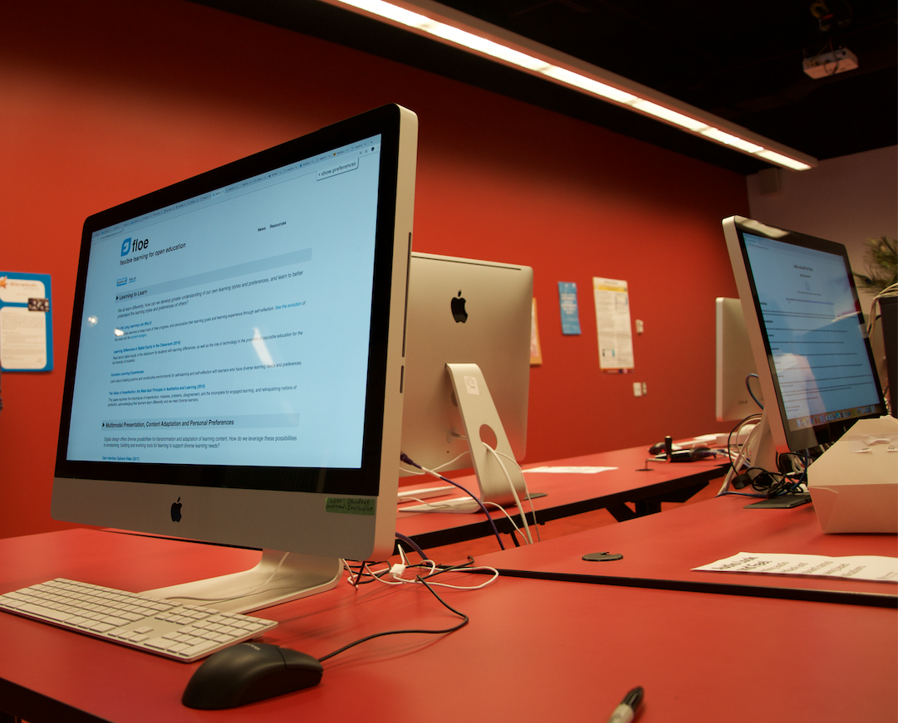

News
Designing Enabling Economies and Policies 2018
The 2018 Designing Enabling Economies and Policies (DEEP) event was held on October 12th and 13th with a dual emphasis on Smart Cities and the 25 years of research and development at the Inclusive Design Research Centre (IDRC). A half day co-design activity aimed at creating an OER toolkit about co-design was held with Floe project team members. Read more about the co-design activity and outcomes on the Inclusive Cities website.
The Floe project also participated in the technical showcase that was part of the IDRC 25 Anniversary.
